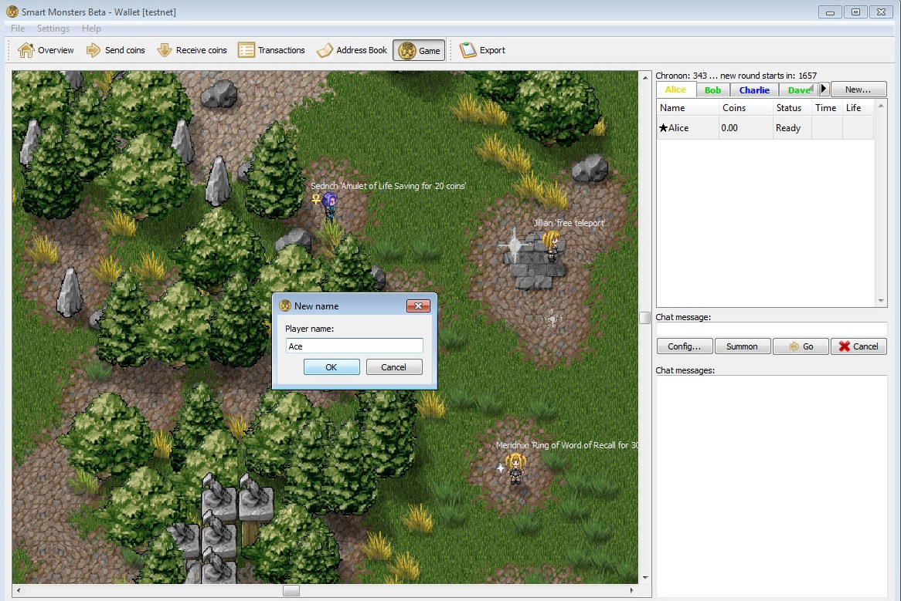
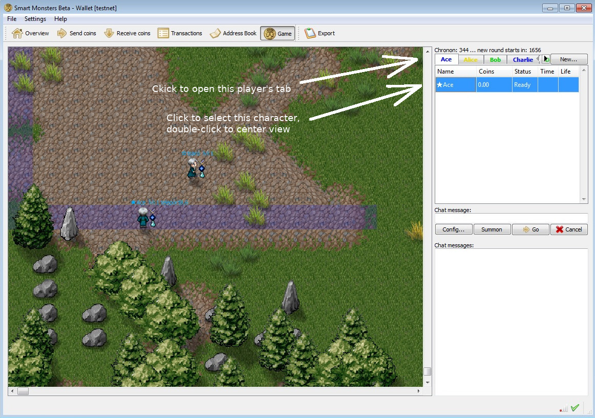
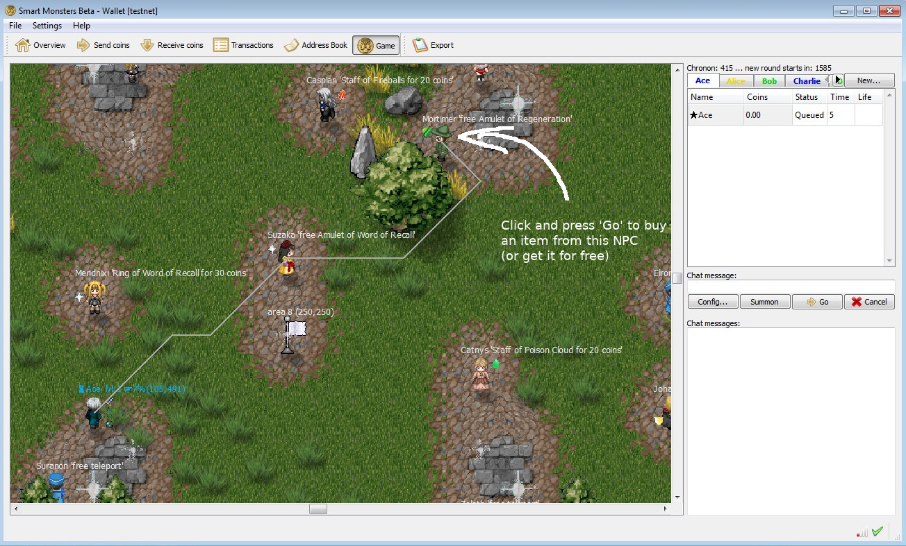
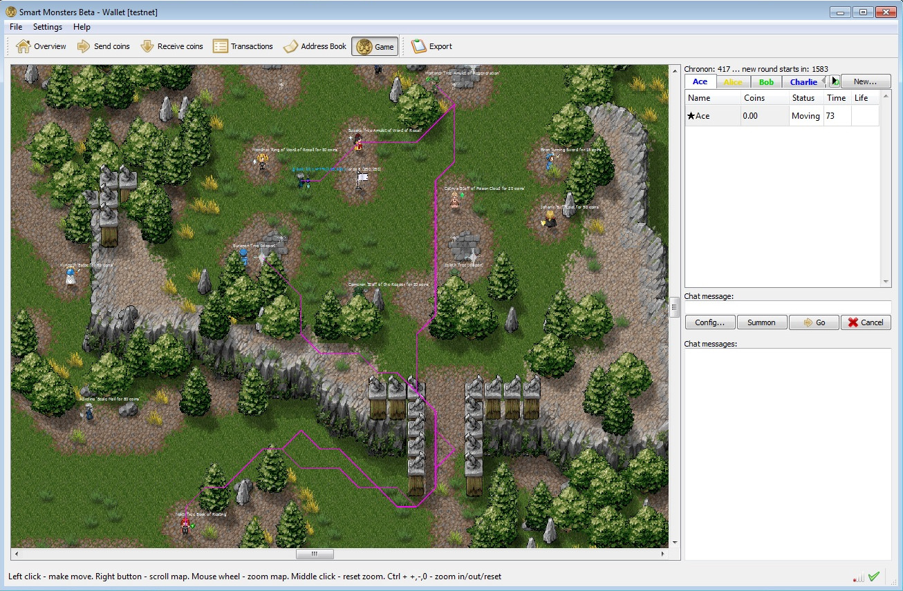
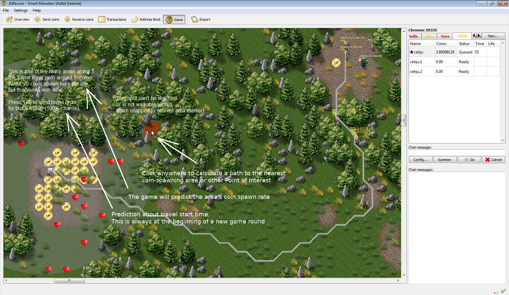

This client will connect to the online beta testnet.
It can mine coins for the testnet. Mined coins must mature for 120 blocks before they can be used.
Default data folder on Windows can be found at "...\username\AppData\Roaming\SmartMonsters\testnet_beta". It contains blockchain and config file for online play.
Starting a new character
Click "New" button, and choose name and color. Creating a new character is a transaction -- after it has confirmed in the blockchain, the new char appears on the map.

Each color has its own base in one of the map corners.
| Yellow | Upper left corner |
| Red | Upper right corner |
| Green | Lower right corner |
| Blue | Lower left corner |

Center and the 4 color bases are safe zones, combat is not possible here. Players of other colors can't walk across the base perimeter (tiles marked on map are still within the safe zone).
Movement in safe zones
To move, set a path to any destination with a mouse click, then press "Go" button. Moving is a transaction -- the path will change from grey to purple after it has confirmed in the blockchain.
Four 2-way teleporters connect the center and the bases. To teleport, stand still on the bright glowing tile.

New characters don't own coins but can get free items from some merchant NPCs.
To save time, use ctrl-click (Ctrl button + left mouse button) to queue several destinations, then press "Go".

Strategic travel orders (Movement outside safe zones)
It's not possible to "manually" step outside of a safe zone. All movement outside of safe zones is delayed.
Interesting areas have a flagpole as area marker. To go there, click near the flagpole, then press "Go" button
Travel orders to (but not from) battlefield areas are irrevocable.

Strategic movement orders as displayed in the GUI
| Name | Symbol | |
|---|---|---|
| point right (black) | ☛ | Coordinates of ordered target area for next round (ordered by player, or with Summon Champion spell). |
| point right (white) | ☞ | As above. Order was given early enough to have 100% chance of being active next round. |
| point down | ☟ | Mark and Recall point, i.e. coordinates for Mark+Recall spell. |
| point up | ☝ | Coordinates of memorised favorite area, if retreating elsewhere. |
Basic Strategy for new characters
First set path to one of the coins-spawning areas (character AI will memorize this and go there later), then take a detour to visit the map center via teleporter and get some free items. When done, feel free to close the Smartmonsters wallet (travel to the coins-spawning areas and fights between characters are always AI controlled and automatic).
You can see orders of all players in the character list (stats_characters.html). It is most informative around the middle of a game round, when the chance of newly submitted orders to be active next round is starting to drop from 100%. Which coin spawning area is not under attack and also not overcrowded?
Choose wisely where to go: outside of safe zones, every unit is on their own. Combat results depend only on character equipment and tactical situation. The point of this game is really to predict the outcome of battles and to send your guys to fight on the winning side, preferably where the losing side is at risk of annihilation rather than mere rout.
Going into the combat zone from map center is more dangerous than from your own base, easy to get sandwiched between groups of hostiles. However, when a new round begins, all characters of the same color (both PCs and monsters) get a 100 block time window to leave the center towards their own sector of the combat zone, making it slightly less dangerous (Other colors will automatically wait, and then get 20-block-time-windows per color so that everyone can leave the center in the direction they want.